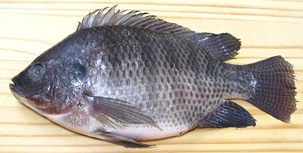

Tilapia

[Sato (Tanzania); Mojara (Spanish); Izumi-Dai (Japan); Nile Tilapia;
Oreochromis niloticus niloticus]
This fish, native to the Nile, can grow to 23 inches but is generally
marketed here at about between 10 and 13 inches and 1 to 2 pounds pounds,
like the photo specimen. Tilapia was already being farm raised in Egypt
probably over 4000 years ago. It has since been transported to fresh
water rivers and lakes in many countries. Tolerant of poor water quality,
fast growing, cheap to feed and tasty to eat, Tilapia is an ideal
aquaculture fish for warmer climates. It is produced in quantity in
Southern California and Arizona, but most still comes from Mexico,
South America and Asia.
More on Varieties of Fish (very
large page).
Tilapia flesh is mild, light in color, and contains moderate oil.
It is firm and remains intact with just about any cooking method,
including ceviche. It is a little delicate for soups and stews, but it
works well enough. Most fish recipes on this site were made with Tilapia
for their first test run, and sometimes after as well. This economical
fish is available by the cart load, live, whole, and as frozen fillets.
Frozen fillets are great for many uses, and I always keep some on hand.
A while back Tilapia was featured in fancy restaurants - until people
caught on they could get it inexpensively at any ethnic market. High
priced chefs just can't live with that, so they now ridicule it every
chance they get. I consider it a fine medium flavored multi-purpose fish
almost everyone will like.
Most tilapia are grey but there are some red ones and white ones
available at a somewhat higher price. The skin is often not eaten,
because some say it is slightly bitter, and if not removed may discolor
the flesh. This is not my experience, and I do see plenty of recipes
cooking whole fish skin-on.
Buying:
This fish is very common both as frozen fillets
and whole fish (usually cleaned, but not scaled). Buy whole fish only
if you want to use parts other than fillets. With whole fish you'll
pay the same for fillets but have to work for them. The frozen fillets
are very distinctive, so you will be getting real tilapia. The photo
specimen above was purchased from a Philippine market in Los Angeles
for 2014 US $1.99 / pound. Frozen fillets are as high as 2019 US $3.29 /
pound, but are often on sale for as low as $1.99 / pound.
Scales:
Tilapia is completely covered with fairly large
scales which scrape off easily with moderate flying about.
Cleaning:
Despite being a rather deep bodied fish,
Tilapia can be cleaned like a round fish because there is no bony keel.
Just cut from the vent forward. There's a substantial swim bladder to
break through to get to the blood works just beneath the backbone. The
gills pull out more easily than with many fish. For details see our
Cleaning and Filleting Round Fish
page.
Fillet:
Tilapia fillets fairly easily with plenty of
fin rays and bones to follow. The rib cage has a lot of ribs. You can
carefully follow them, shaving the fillet from the ribs. Actually, when
I get to the rib cage I cut the ribs from the backbone with kitchen
shears and pull them from the fillet with long nose pliers. You will
feel what seems to be a row of substantial centerline pin bones but you
need pull only the first three or four. The rest are soft and will not
be noticeable when cooked.
The skirt is wide and quite thin, so the fillet will break off
there, but it expands again at the belly where it's stiff and fatty. Cut
these belly parts off - they are reserved for the cook. Lightly dust them
with rice flour and frying skin-on in a lightly flavored olive oil. The
heat causes the fat to liquify. Eat these cuts hot with some salt and
lemon juice - fish oil is good for you (high in omega-3). This is sort
of like with milkfish in the Philippines - the fatty belly is often sold
separately at a higher price.
Yield:
A 1 pound 5 ounce tilapia yielded 8-1/2 ounces
of skin-on fillet including the belly fat (40%), 7-1/2 ounces skin-on
belly trimmed (36%) and 6-3/4 ounces skinless (32%). This is pretty good
yield for a low cost fish.
Skin:
Tilapia skin shrinks very little when fried, so
fillets can be fried skin-on. Some say the skin will make the flesh
somewhat bitter, but I have not found that to be true. In any case, the
skin is easy to remove using the standard long knife and cutting board
Method.
Stock:
Tilapia head, fins and bones produce a very
usable, moderately flavored and slightly sweet stock with moderate
oil. I've also tossed in the skins and still had very good results -
no bitterness or overly strong flavor. Use your gravy separator to
remove all fat. For details see our
Making Fish Stock page.
sf_tilapz 06 r 140225 - www.clovegarden.com
©Andrew Grygus - agryg@clovegaden.com - Photos on this
page not otherwise credited are © cg1 -
Linking to and non-commercial use of this page permitted